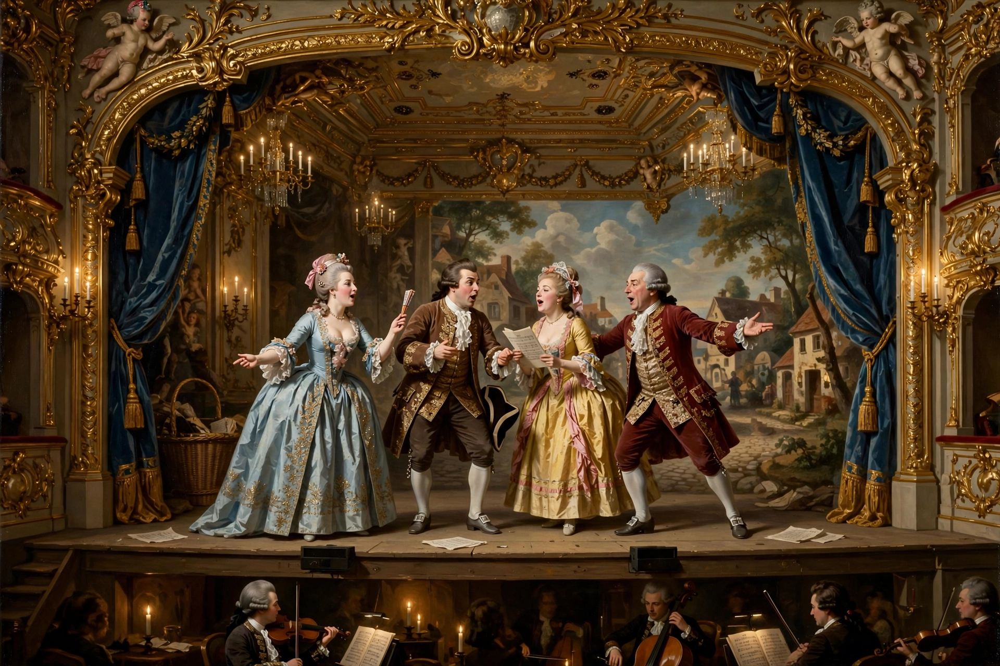

Opera buffa

Opera buffa (Italian, plural: opere buffe) is a genre of comic opera that emerged in 18th-century Italy as the counterpart to the heroic opera seria. It features everyday characters, humorous plots, rapid patter singing, spoken-like recitative and ensembles — in contrast to the gods, kings and mythological heroes of serious opera.
Origins
The genre grew out of the comic intermezzi performed between the acts of serious operas, of which Pergolesi's La serva padrona (1733) became famous throughout Europe and sparked the Parisian Querelle des Bouffons. Naples was the earliest centre of full-length comic opera; from there the genre spread to Venice, where Carlo Goldoni supplied libretti for composers such as Baldassare Galuppi.
Characteristics
Typical libretti satirise aristocrats, misers, pedants and quack doctors, while servants and young lovers triumph. Music features fast syllabic "patter" arias, the buffo bass role, and large ensemble finales — a structure perfected by Mozart in The Marriage of Figaro (1786), Don Giovanni (1787, a "dramma giocoso") and Così fan tutte (1790), all to libretti by Lorenzo Da Ponte.
Later development
In the 19th century Rossini's The Barber of Seville (1816) and Donizetti's Don Pasquale (1843) brought the buffa style to a final flowering before it was absorbed into broader comic-opera traditions such as French opéra comique and German Singspiel.